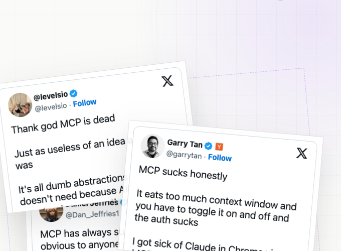
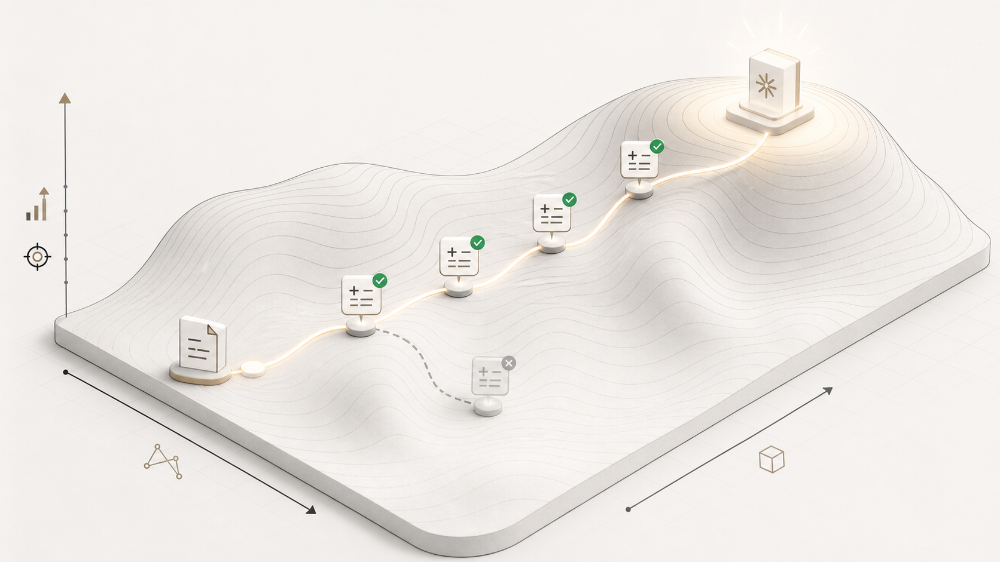
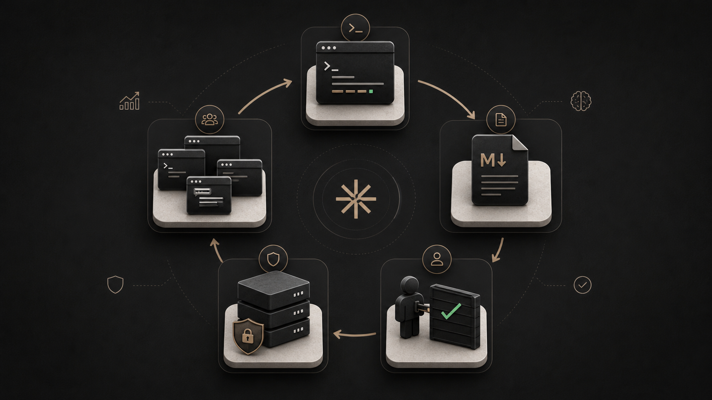

Self-Improving Agents That Teach the Company Back
Rafal Wilinski · Founding Engineer, Runlayer
Rafal Wilinski · Founding Engineer, Runlayer
Founding Engineer at Runlayer. Previously Tech Lead for Zapier Agents, AI Tech Lead at Vendr, and creator of Dynobase.


Steps, constraints, common traps, verification.
The trigger conditions that make this playbook relevant.
The local standards a generic model would not know.
METR tracks the human task duration at which an agent is predicted to succeed with a target reliability.

More autonomy means more useful work, but also more time to over-invest in a local optimum.

Root cause, fix, PR, and what not to restart blindly.
SAP screens, exception path, budget code, approval order.
Legacy script, runtime flags, environment variables, rollback.
Severity proof, safe language, escalation owner, approval gate.
That is fine for developers. It breaks when a whole company needs shared, updated knowledge.
Hand-authored skills are useful, but they do not scale to every weird task an agent discovers while doing real work.
Dear agent, please remember that this one Lambda runtime requires this one Chromium fork and this one font package and this one launch flag and... no human wants to maintain this forever
Including the client your HR, marketing, and finance teams are most likely already using.
Great for developers. Native skill workflows fit the audience.
The popular client for non-developer departments.
Mixed support, different surfaces, uneven rollout.

Search for relevant skills. Fetch the actual skill file. The harder work is ranking, scoping, governance, and evaluation.
findSkills({ query: "debug chromium lambda fork" }) → SkillSummary[] getSkillFile({ skillName: "chromium-lambda-runtime", fileName: "SKILL.md" }) → string
In Minecraft, the agent explored, wrote reusable code skills, retrieved them later, and improved without changing model weights.

The distilled skill captured the exact runtime setup, launch flags, dependencies, and verification path that made future runs reliable.
How this repo expects auth, retries, logging, and rollout guards.
Which signals prove severity and which customer messages are safe.
The exact sequence for a vendor, region, or internal tool.
Each successful run is a signal. Some diffs move the skill toward better task completion. Some need to be rejected or rolled back.


Successful work should become inspectable, improvable, and eventually useful everywhere work happens.